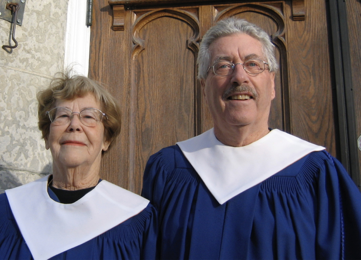

-1-MasterItem.svg)
Stories of Westminster United Church & its People / Page
173
in the early years of Manitoba Theatre Centre when MTC did the occasional
musical production.
Besides everything else, Glen served as Musical Co-ordinator and Conductor for
the 1967 Pan-Am
Games in Winnipeg.
In 1978 Glen moved to Winnipeg School Division and became coordinator of music
there. He retired
from that position in 1989.
In 1989, after his retirement from teaching, Glen was a co-founder of the
Gilbert and Sullivan Society
of Winnipeg, and was its Artistic Director until his death in 2017. He directed
13 of the first 14
productions, starting with
The Mikado
in 1991.
In Glen’s 52 years as Choir Director, the Westminster choir participated
in some 2184 Sunday morning services (approximately 42 each year),
plus 52 Christmas Eve services, plus an assortment of funerals and other
special services. In the early years there were Sunday evening services
too. Besides an anthem for every Sunday service, the choir also
performed a number of oratorios and masses from the classical
repertoire of church music, such as Handel’s
Messiah
, Vivaldi’s
Gloria
,
Haydn’s
Lord Nelson Mass
, Mozart’s
Requiem
,
Requiem
by Gabriel Fauré, the
Rutter
Requiem
, and Beethoven’s
Mass in C
, Menotti’s one-act Christmas opera,
Amahl and the Night
Visitors
, was performed several times,
The choir also took part in concerts to assist in the church’s fund-raising efforts. Such occasions gave
Glen a chance to indulge in his love of musical theatre, and the programmes were
often made up of
songs from Broadway musicals and Gilbert and Sullivan works.
One of the things I particularly remember about Glen as our choir leader was his — encouragement?
insistence? nagging? — about pronouncing words correctly and clearly. It was important, he said, that
people be able to understand the words of the anthems (assuming they were in
English), even the
people at the back of the sanctuary. He was always after us to make sure we
pronounced the
consonants on the ends of words.
Table
of Contents
Music at Westminster
